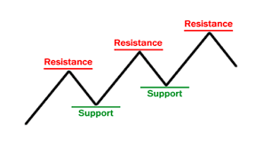

Technical Analysis
Technical analysis is a method of evaluating securities by analyzing statistical trends gathered from trading activity, such as price movement and volume. Unlike fundamental analysis, which attempts to evaluate a security's intrinsic value based on economic data and company performance, technical analysis focuses on past market data to predict future price movements. It is widely used in forex trading due to its reliance on historical price patterns and market behavior.
Key Components of Technical Analysis
Price Charts:
Price charts are the cornerstone of technical analysis. They provide a visual representation of how a currency pair has traded over a specific period. The most common types of charts used in technical analysis are line charts, bar charts, and candlestick charts.

Support and Resistance
Support and resistance levels are critical concepts in technical analysis. Support is a price level where a downtrend can be expected to pause due to a concentration of buying interest, while resistance is a price level where an uptrend can pause due to a concentration of selling interest.
Trend Lines:
Trend lines are straight lines drawn on a price chart to connect two or more price points. They help identify the direction of the market and potential support and resistance levels.

Moving Averages:
Moving averages smooth out price data to create a trend-following indicator. The two main types are the simple moving average (SMA) and the exponential moving average (EMA). The SMA calculates the average of a selected range of prices, while the EMA gives more weight to recent prices.

Popular Technical Analysis Tools
Fibonacci Retracement:
Fibonacci retracement levels are horizontal lines that indicate where support and resistance are likely to occur. They are based on the Fibonacci sequence and are used to predict potential reversal levels.

Bollinger Bands:
Bollinger Bands consist of a middle band (SMA) and two outer bands (standard deviations away from the SMA). They help identify periods of high and low volatility and potential overbought or oversold conditions.

Relative Strength Index (RSI)
The RSI is a momentum oscillator that measures the speed and change of price movements. It ranges from 0 to 100 and helps identify overbought or oversold conditions.
.png)
Moving Average Convergence Divergence (MACD)
The MACD is a trend-following momentum indicator that shows the relationship between two moving averages of a currency pair’s price. It helps identify potential buy and sell signals.
.png)
Conclusion
Technical analysis is an essential tool for forex traders, providing insights into market trends, price patterns, and potential trading opportunities. By mastering the key components of technical analysis, such as price charts, support and resistance, trend lines, and indicators, traders can develop effective trading strategies and make informed decisions. While technical analysis requires practice and experience, it offers a systematic approach to understanding market behavior and identifying profitable trades.